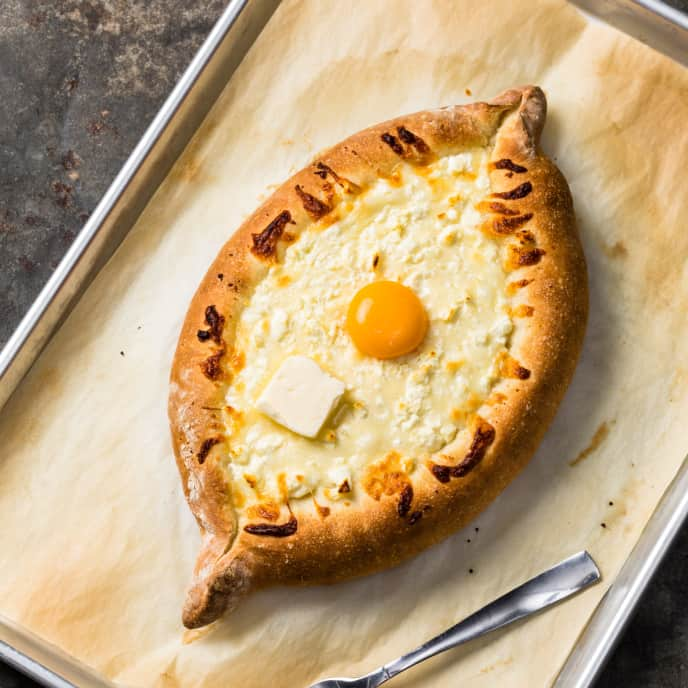

Khachapuri

Description
Khachapuri is a traditional Georgian dish of cheese-filled bread. The bread is leavened and allowed to rise,
molded into various shapes, and then filled in the center with a mixture of cheese (fresh or aged,
most commonly, specialized Khachapuri cheese), eggs, and other ingredients. The bread crust is
traditionally torn off and dipped into the cheese.
There are several distinctive types of khachapuri in Georgian food from different regions of Georgia:
- Imeretian (Imeruli), Khachapuri is the most popular form, made by pastry infused with yeast and white Imeretian salted cheese.
- Adjarian Lazi (Acharuli/Adjaruli/Lazi) A boat-shaped Khachapuri, with cheese, butter and egg yolk in the middle. It is thought to originate from the Lazi people, who were sailors. Khachapuri is a certain representation of the boat, sea and sun.
- Megrelian khachapuri (Megruli), similar to Imeritian but with more cheese added on top.
- Achma, from Abkhazia, which has multiple layers and looks more like a sauceless lasagna.
- Gurian (Guruli) khachapuri has boiled eggs inside the dough and looks like a calzone. Arguably, it is not a type of khachapuri. Gurians make them for Christmas and call them simply 'Christmas pie'. In the rest of Georgia, it is called 'Gurian pie'.
- Svanuri Lemzira
- Rachuli khachapuri
- Samtskhe–Javakhetian Penovani khachapuri is made with puff pastry dough, resulting in a flaky variety of the pie.
We will present the recipe of Adjarian khachapuri
Ingredients
Dough:
- 1 tablespoon olive oil, plus more for the bowl
- 1/4 cup milk
- Pinch sugar
- 1 teaspoon active dry yeast
- 1 3/4 cups all-purpose flour, plus more for dusting (see Cook's Note)
- 1 1/4 teaspoons kosher salt
Filling and Topping:
- 1 pound part-skim mozzarella, shredded
- 8 ounces feta, crumbled
- 3 large eggs, at room temperature
- 2 tablespoons unsalted butter, at cool room temperature
Steps
Special equipment: a pizza stone
- For the dough: Lightly oil a medium bowl. Heat the milk with 1/2 cup water in a small saucepan over low heat to between 110 and 115 degrees F. Transfer it to a small bowl and stir in the sugar, then sprinkle over the yeast and let stand until foamy, 5 to 10 minutes. (Cover the bowl if the room or the yeast is cold.)
- Put a pizza stone on the lowest rack in your oven, removing the second rack if there is one. Preheat the oven to 500 degrees F. Cut two 10-by-7-inch pieces of parchment paper.
- Put the flour in a medium bowl and whisk in the salt. Make a well in the center and pour in the yeasty mixture and the oil. Stir with a wooden spoon until the flour is incorporated and the mixture forms a shaggy ball -- it will be soft and sticky. Flour your work surface, scrape the dough onto it and knead until smooth, elastic and still slightly sticky, about 5 minutes. Put the dough in the oiled bowl, turn it to coat with oil and cover the bowl loosely with plastic wrap. Set the bowl in a warm place until doubled in size, 1 hour to 1 hour and 15 minutes.
- For the filling and topping: Work the mozzarella and feta together with a fork in a medium bowl. Make a little well in the center and add 1 egg. Beat the egg a bit with a fork, and mix and mash well to combine with the cheeses.
- Lightly flour your work surface. Turn the dough onto the floured surface and cut it in half. Round the halves gently back into rough rounds. Put 1 piece of parchment paper on your work surface and flour it lightly. Press and use a rolling pin to roll 1 piece of dough into a round 1/8-inch thick and 10-inches across. Slide it onto the paper -- it will hang over the long edges -- and then slide it, paper and all, onto the back of a baking sheet. (Alternatively, use a pizza peel.) Repeat with the other piece of dough, transferring it to the back of a second baking sheet.
- Spoon half of the cheese mixture on the first round, spreading some 1/2-inch from the edge and mounding the rest in the middle (there will be a big mound). Roll the sides up tightly to make a shape like a cheese-filled canoe -- it should be about 10 inches long and 4 inches wide. Pinch the ends together and twist to seal tightly. Repeat with the other piece of dough and remaining cheese. Let rest 10 minutes.
- Slide the khachapuris on their papers onto the pizza stone, leaving a few inches of space between them. Bake, turning them 180 degrees after about 8 minutes, until golden and crisp, about 12 minutes total. Crack 1 egg in each khachapuri and continue to bake until the white is just set around the edges, but some of the white and the yolk are still a bit raw, about 3 minutes. Remove to a serving platter, dot each khachapuri with 1 tablespoon butter and stir the eggs into the hot cheese¿they will continue to cook. Serve immediately, tearing off pieces of bread to scoop up the hot, buttery, eggy, gooey cheese.
Cook's note:
When measuring flour, we spoon into a dry measuring cup and level off the excess. (Scooping directly from the bag compacts the flour, resulting in dry baked goods.)